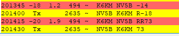

Just worked NV5B for fun… He was 1.2DT and -18dB. Closed the QSO at 1.9DT and -20dB  From: Mike Flowers via Chat I routinely work stations on FT8 with a DT of +/- 2.5 seconds. I’ll make it a point to try to work some more and report the results. - 73 and good DX de Mike, K6MKF, NCDXC Secretary From: Chat <chat-bounces@ncdxc.org> On Behalf Of Frank via Chat On Fri, Sep 18, 2020 at 12:57 PM David Grybos - KK6US via Chat <chat@ncdxc.org> wrote:
My personal experience is that WSJT-X can't handle stations that are more than +/- 0.25 seconds different than my clock, maybe a bit more. But that doesn't happen often, so I suppose the problem could actually have been something other than the difference in our clocks. That said, a difference of -2 to +3 seconds is much wider than I thought the software could handle. And FWIW, I haven't used Timefudge myself but I know people who have used it successfully to make FT8 contacts when they're clock wasn't accurate. 73, Frank N6OI |